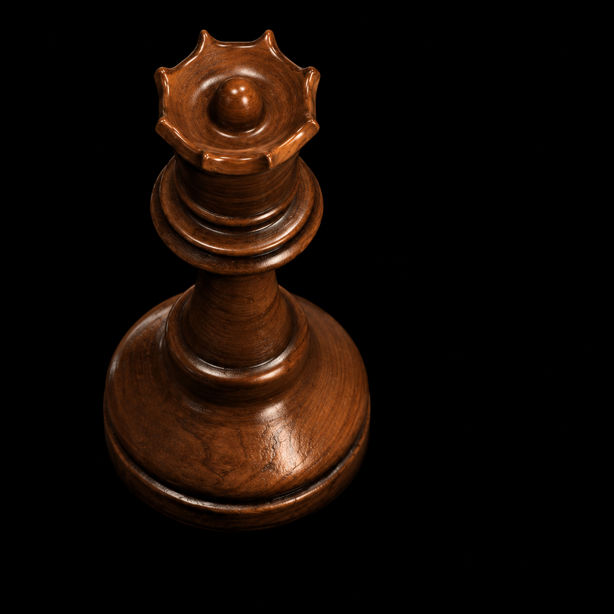
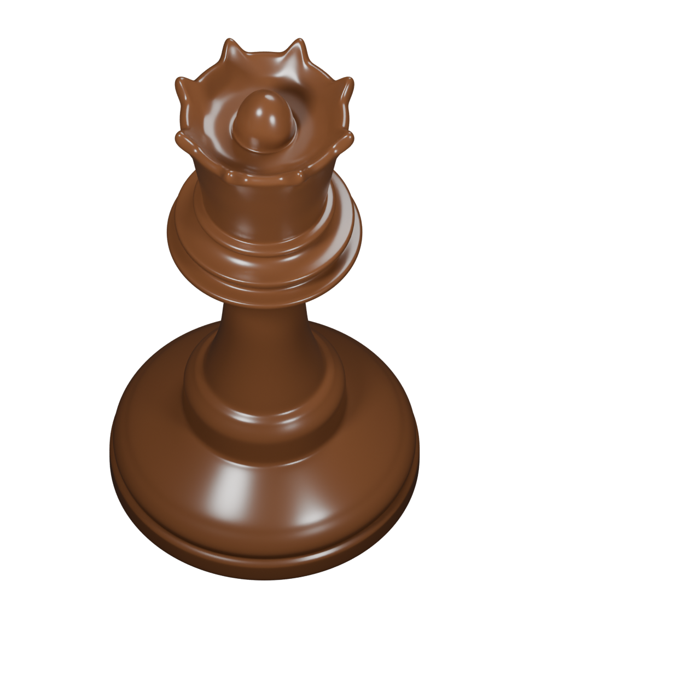
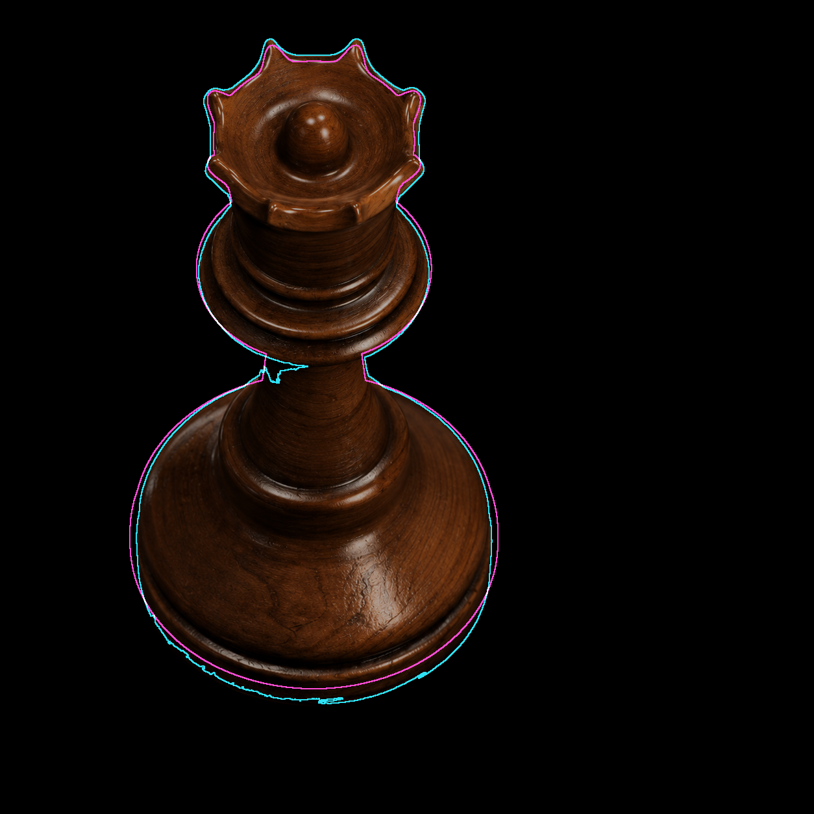
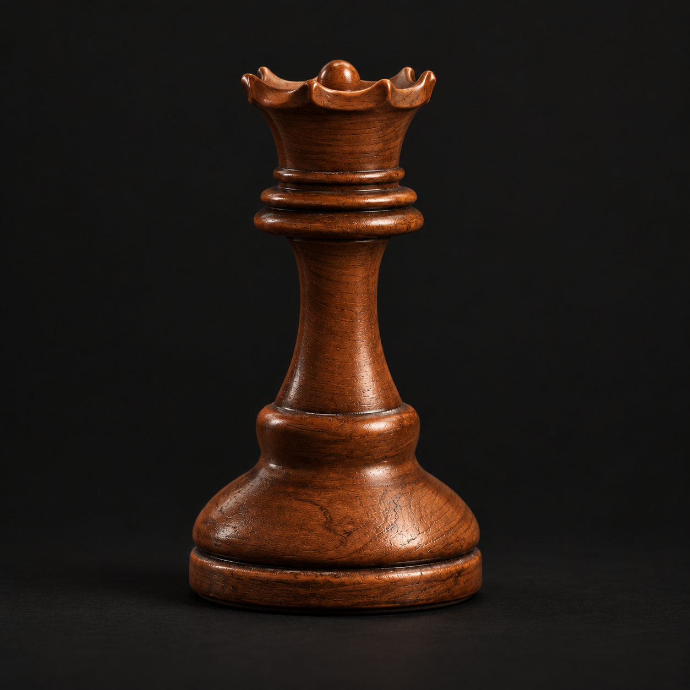

Queen reconstruction
Drag to pan the reference image · Use the tabs to switch tools
Reference
Revision
Material



50% model over reference
1254 × 1254 source pixels
High-res contours (current): reference / model / white overlap
A comparison image could not be loaded. Keep this page with its assets and original reference images, then reload.
Imagined side guide
